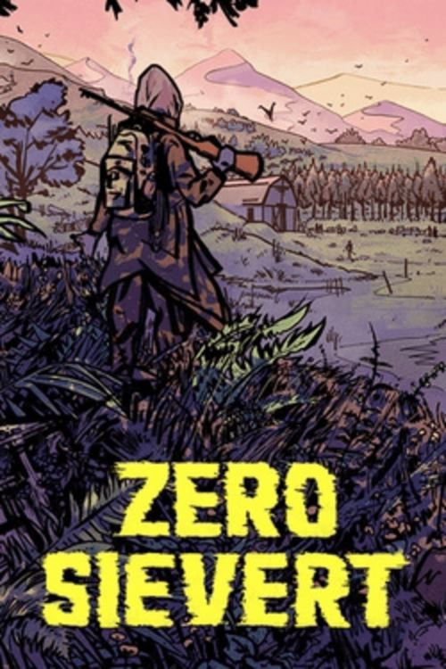

ZERO Sievert 266 MB
Género: Survival
ZERO Sievert es un juego de disparos y extracción con perspectiva cenital que
te desafía a desenvolverte en un yermo generado de manera procedimental,
por lo que tendrás que saquear equipo y explorar lo que queda de un mundo
devastado. Cuando lo tengas todo en contra, sobrevivir no será suficiente.